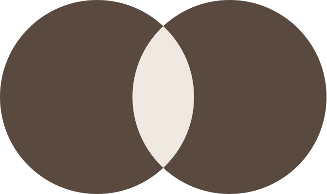
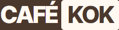

01 / ONBOARDING
첫 인상은 가볍게,
시작점은 분명하게.
서비스의 성격을 사진과 한 문장으로 전달하고 취향 질문으로 이어집니다.


- 단일 시작 행동
- 첫 화면의 버튼은 취향 설정이라는 다음 행동에 집중합니다.
- 여섯 가지 질문
- 분위기·공간·좌석·메뉴·가격·이동 반경을 나누어 입력합니다.


취향과 방문 목적을 연결해
나에게 맞는 카페를 발견하다
01 / OVERVIEW
평소 좋아하는 카페의 분위기는 같아도, 오늘 방문하는 목적은 달라집니다. 카페콕은 개인의 취향과 오늘의 방문 목적을 함께 고려해 카페를 찾고 비교하고 선택하도록 돕는 모바일 서비스입니다.
02 / BACKGROUND
카페는 많지만, 취향과 방문 목적에 맞는 곳을 고르는 과정에는 여러 번의 확인과 비교가 필요합니다.
카페의 수보다 중요한 것은 선택의 기준입니다. 정보 탐색의 부담을 줄일 수 있을까 하는 질문에서 시작했습니다.
탐색 문제에 대한 설계 가설 · 사용자 조사로 검증 예정03 / SERVICE CONCEPT
평소 선호하는 공간에 오늘 방문하는 이유를 더합니다. 복잡한 조건을 직접 조합하기보다, 선택의 기준을 먼저 정리하도록 구성했습니다.

SIX TASTE DIMENSIONS
취향을 먼저 정리하고, 오늘의 방문 목적은 별도로 선택합니다. 두 입력을 하나의 추천 흐름으로 연결했습니다.
실제 취향 점수나 사용자 조사 결과를 나타낸 그래프가 아닌, 프로토타입의 입력 항목을 정리한 정보 구조입니다.
05 / DESIGN SYSTEM
따뜻한 에스프레소 브라운과 화이트 바탕을 중심으로 사진과 정보의 역할을 구분했습니다.

CAFÉ와 KOK을 결합한 워드마크.
따뜻한 색과 명확한 비례로 서비스의 성격을 드러냅니다.
400 / Regular가까운 카페 말고, 나와 맞는 카페.
500 / Medium가까운 카페 말고, 나와 맞는 카페.
600 / SemiBold가까운 카페 말고, 나와 맞는 카페.
700 / Bold가까운 카페 말고, 나와 맞는 카페.
#4A372C
헤더 · 브랜드#34302C
텍스트 · 액션#FFFFFF
화면 · 카드#F0E9E1
빈 상태#F5F5F4
구분 영역#E7E7E7
선택 상태#817A73
보조 설명#557585
추천 지표06 / MAIN EXPERIENCE
실제 프로토타입으로 주요 화면의 사용 흐름을 살펴봅니다. 각 화면의 역할과 사용자의 다음 행동을 함께 설명합니다.
01 / ONBOARDING
서비스의 성격을 사진과 한 문장으로 전달하고 취향 질문으로 이어집니다.
02 / HOME
방문 목적을 먼저 선택하고 취향에 맞는 카페를 살펴보도록 구성했습니다.
03 / EXPLORE
검색과 필터를 통해 원하는 조건의 카페를 탐색하고 목록과 지도로 비교합니다.

04 / SAVED
카페를 저장하고 다시 확인하는 흐름을 연결했습니다.


05 / MY TASTE
설정한 선호 조건을 모아 보여주고 수정하거나 추천으로 돌아갈 수 있게 구성했습니다.

07 / REFLECTION